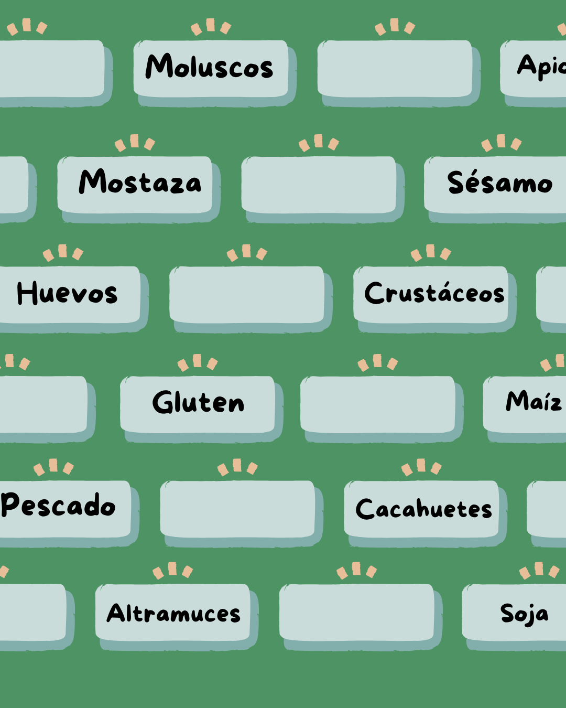

<div class="container my-5">
  <div class="card shadow feature-card border-0 p-4">
    <div class="row align-items-center">

      <!-- Texto -->
      <div class="col-md-8">
        <h3 class="fw-bold  mb-3 titulo ">Alérgenos visibles en tu menú digital</h3>

        <p class="text-cha fs-5">
          Facilita la información nutricional a tus clientes mostrando de forma clara y rápida los alérgenos presentes en cada plato de tu carta digital.
        </p>

        <p class="text-cho fs-6 fw-semibold">
          Cumple con la normativa vigente y ofrece mayor seguridad a tus comensales. La visualización inmediata de alérgenos genera confianza y mejora la experiencia del usuario.
        </p>

        <ul class="list-unstyled mt-5">
          <li class="mb-2 hover-list-item">🍽️ Identificación rápida y visual de alérgenos</li>
          <li class="mb-2 hover-list-item">⚙️ Actualización sencilla desde tu panel de control</li>
          <li class="mb-2 hover-list-item">🔒 Cumplimiento de normativas alimentarias</li>
        </ul>
      </div>

      <!-- Imagen -->
      <div class="col-md-4 text-center mt-4 mt-md-0">
        
      </div>

    </div>
  </div>
</div>
